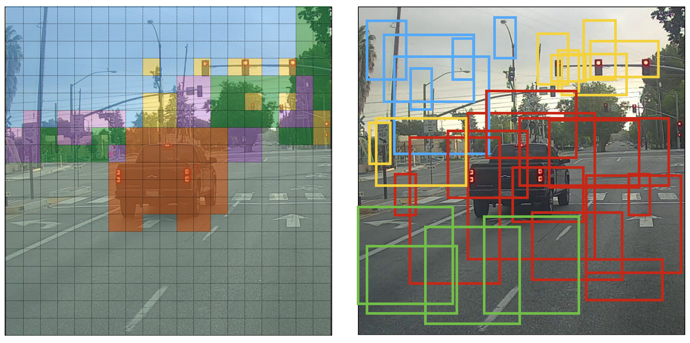
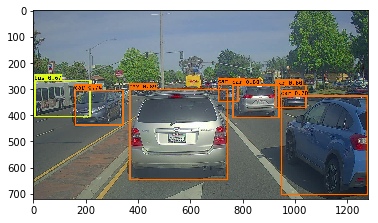

前言
最近在看《梁实秋读书与做人》，开始感受到了时间的宝贵，究竟如何才能掌握尚未逝去的时光呢？同时也尝试了刷一刷 LeetCode，毕竟这是每一个计算机从业者的基本功，不能再浑浑噩噩了。论文还是没有结果，在一个博士的指导下投了 B 刊，也是不能松懈，继续折腾吧！正好自己又有了一点小想法，可是为什么我的想法总是这么难实现呢？每一篇博客的前言都是被用来吐槽的，吐槽最近的生活与科研。空闲之余继续学习深度学习，这一节的内容是使用 YOLO 算法实现“自动驾驶”，其实是对摄像头拍摄的视频中的每一帧进行目标检测。
目标检测
这部分内容属于自动驾驶的一个模块，即车辆检测。通常自动驾驶需要给汽车安装一个摄像头，对前方路况进行拍摄，我们需要检测前方有无车辆以及车辆的位置信息，以供其它模块避开车辆。

这里使用 YOLO 算法进行目标检测，一共有 80 个类别，即
YOLO
YOLO (You Only Look Once) 算法在目标检测领域比较受欢迎，因为它的准确率比较高而且可以做到实时检测。这个算法只需要前向传播一次即可做出预测，在非极大值抑制后即可输出识别的目标和其位置信息。而前面介绍的 RCNN 系列算法则是需要先提取图像的感兴趣区域，再对这些区域进行分析，即需要“看”两次。
模型
- 输入：一个批次的三通道图像，其 shape 为
- 输出：一个列表，列表中每个元素为一个 6 维向量
；如果使用独热向量则是 85 维向量。
实验使用 5 个锚框，因此 YOLO 的结构为：IMAGE (m, 608, 608, 3) -> DEEP CNN -> ENCODING (m, 19, 19, 5, 85)，如下图所示：

如果目标的中心在网格中，该网格就需要检测到该目标。由于使用了 5 个锚框，所以输出的

对于网格中的每一个锚框，我们需要计算其中分类为每一个类别的概率，如下图所示：

图中

即使取了最大值，但是输出的边界框还是很多。因此还可以对其进行过滤：
- 去除得分比较低的边界框（阈值过滤），得分低表示边界框不敢肯定其中检测到的目标
- 对于重叠内容比较多的边界框，只保留其中一个（非极大值抑制）
阈值过滤
设定阈值，过滤掉得分低于阈值的边界框。模型输出的维度为
box_confidence: 维度为的张量，对应所有边界框的 boxes: 维度为的张量，对应所有边界框的位置信息 box_class_probs: 维度为的张量，对应检测到的目标的类别的概率
实现阈值过滤包含以下四个步骤：
计算每个边界框包含的具体类别目标的概率
1
2
3a = np.random.randn(19*19, 5, 1)
b = np.random.randn(19*19, 5, 80)
c = a * b # shape of c will be (19*19, 5, 80)对于每一个边界框，找到最大的得分
box_class_scores与其对应类别的索引box_classes根据阈值创建 mask 矩阵。如
([0.9, 0.3, 0.4, 0.5, 0.1] < 0.4返回[False, True, False, False, True]将 mask 矩阵应用到
box_class_scores和box_classes中即可过滤出超过阈值的边界框
1 | def yolo_filter_boxes(box_confidence, boxes, box_class_probs, threshold = .6): |
非极大值抑制
阈值过滤后，还是会有很多边界框。它们框住同一个目标，因此

上图中模型预测出三个车，但是属于同一辆车，非极大值抑制可以保留最准确的一个边界框，即概率最大的一个。非极大值抑制中有一个很重要的概念叫交并比 IoU(Intersection over Union)，其原理如下图所示：

实验给定的边界框位置信息为左上角和右下角：(x1, y1, x2, y2)。即边界框的高为 (y2 - y1)，宽为 (x2 - x1)；图像的左上角为 (0, 0)，右上角为 (1, 0)，右下角为 (1, 1)。给定两个边界框，还需要找到交并后的坐标：
xi1: 两个边界框 x1 的最大值yi1: 两个边界框 y1 的最大值xi2: 两个边界框 x2 的最小值yi2: 两个边界框 y2 的最小值
1 | def iou(box1, box2): |
实现非极大值抑制分为三个步骤：
将所有边界框按照得分排序，选择最高分的边界框
遍历其余的边界框，计算得分最高的边界框与这些边界框的交并比。如果交并比大于阈值
iou_threshold，则删除这些边界框迭代以上过程，直到处理完毕所有的边界框
Tensorflow 内置函数实现了非极大值抑制，代码如下所示：
1 | def yolo_non_max_suppression(scores, boxes, classes, max_boxes = 10, iou_threshold = 0.5): |
合并过滤器
将以上两种过滤器合并为 yolo_filter_boxes；深度 CNN 输出的yolo_outputs。由于过滤器需要的位置信息不同，需要将 (x, y, w, h) 转化为 (x1, y1, x2, y2)。如果测试集的图像尺寸与训练集不一致，例需要将其扩展到图像大小的测试集上，例如图像大小为 (720, 1280) 。实验提供这些功能的接口，代码如下所示：
1 | def yolo_eval(yolo_outputs, image_shape = (720., 1280.), max_boxes=10, score_threshold=.6, iou_threshold=.5): |
测试
在图像大小为 (720, 1280) 的测试集上测试预训练的模型，由于需要检测 80 种类别并且使用 5 个锚框，因此需要先载入这些信息。
1 | sess = K.get_session() |
该模型的输出维度为 (m, 608, 608, 3))，输出维度为 (m, 19, 19, 5, 85)。将输出转化为过滤器的输入所需的维度，继而对边界框进行过滤：
1 | yolo_outputs = yolo_head(yolo_model.output, anchors, len(class_names)) |
运行图
目前为止，我们已经创建了一个 (sess) 图，主要包含以下三部分内容：
yolo_model: 输入为 yolo_model.input，输出为 yolo_model.outputyolo_head: 输入为 yolo_model.output，输出为 yolo_outputsyolo_eval: 过滤函数，输入为 yolo_outputs，输出为预测结果 scores, boxes 和 classes
1 | def predict(sess, image_file): |
preprocess_image 函数返回的 image 用于绘制边界框。在测试图像种运行结果如下所示：
1 | out_scores, out_boxes, out_classes = predict(sess, "test.jpg") |
1 | Found 7 boxes for test.jpg |

总结
YOLO 是目前目标检测领域最快最准确的算法，其直接在整张图像上运行 CNN 网络，输出
参考文献
- 吴恩达. DeepLearning.
- Joseph Redmon, Santosh Divvala, Ross Girshick, Ali Farhadi - You Only Look Once: Unified, Real-Time Object Detection (2015)
- Joseph Redmon, Ali Farhadi - YOLO9000: Better, Faster, Stronger (2016)